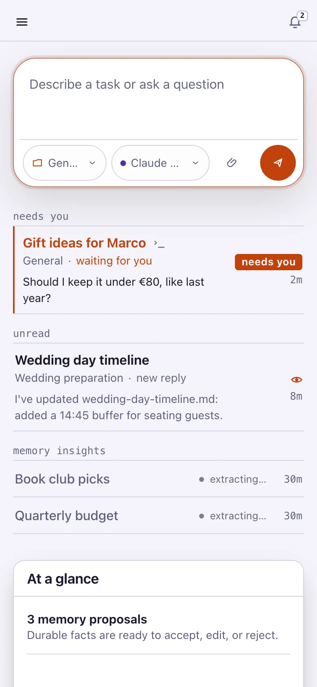
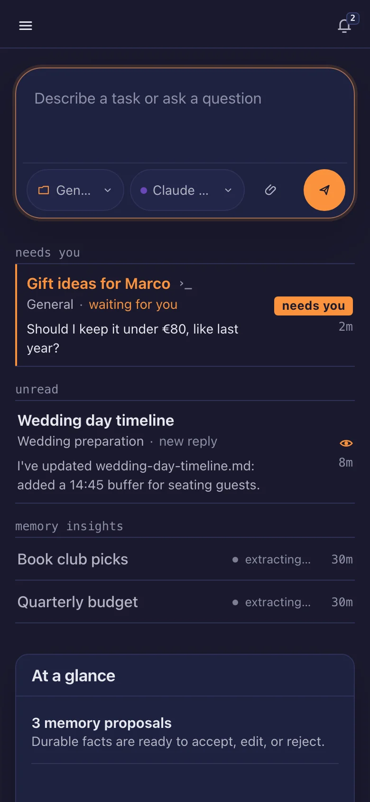

Your agents do the work. Ciaobot remembers.
Works with Claude Code, Codex and OpenCode
Your agent does the thinking. Ciaobot gives it a place to work, and turns what you do together into memory you can read, check and correct.
Apple silicon, macOS 14+. The app includes its own engine. Running a Linux server instead? Install the engine there.
- Free and open source
- No account, no telemetry
- stars · downloads
Proactivity is hype. Control is efficiency.
Personal agents like OpenClaw and Hermes promise to act on their own. Ciaobot gives you the same agents with the steering wheel kept on your side.
You organise the work
Workspaces for each part of your life, projects that carry their context, routines on the schedule you set. The agent works inside the structure you chose.
You set how far it goes
Each chat has a permission mode, from read-only plans to asking before every action. Unattended runs do only what needs no approval and report the rest.
You can always look
See what every chat and background job is doing, approve or refuse each card, and find every memory change in History with its reason.
We don't rebuild your agent. We make it yours.
Claude Code, Codex and OpenCode already know how to reason, write code and call tools. Ciaobot adds the part that turns a model into an assistant you can work with, and leaves the rest to them.
Your agent, with everything you set up
Ciaobot drives the CLI you already signed in to, with its own models, skills, plugins, subagents, MCP servers and connectors. Nothing is re-implemented in between. Want one place for it all? Add skills, subagents and commands to Ciaobot once and every agent gets them.
Agents and modelsMemory you can check
What a chat teaches lands as Markdown notes you can open, correct or undo. The Memory Map shows how they connect. Nothing happens that you cannot read.
How memory worksBetter every week
Once a day, at a time you choose, Ciaobot tidies your memory: it merges duplicates, retires what expired and flags notes that went stale. When the same correction keeps coming up, it proposes a better skill. You approve each change.
What the daily pass doesA place to work
Workspace, project, chat. Documents or code, with files beside the conversation and routines that run on a schedule, from your Mac or your phone.
How it remembers
No hidden database. When you archive a chat, its facts are filed into notes in your folder. Anything uncertain waits for you to decide.
Your assistant, in your pocket.
Your computer runs Ciaobot. Your phone opens it in the browser and adds it to the home screen, like any app. Same chats, same projects, same memory, nothing to sync.
- Connect your phone and computer with Tailscale, a free private network.
- Open Ciaobot's address in your phone's browser and sign in.
- Tap Share → Add to Home Screen on iPhone, or Install app on Android.


Zero telemetry.
Not opt-out. Not anonymous. None. We do not know you installed it, and this site runs no analytics either.
Use it at work, too.
Ciaobot is a workspace and a few background jobs on top of the official CLIs: Claude Code, Codex and OpenCode. Your agent signs in with your company plan exactly as it does in a terminal, so using Ciaobot at work means the same sign-in, the same plan and the same terms your company already has. Ciaobot adds no account and no cloud of its own, and your files stay on your laptop or on a server your company runs.
- Keep work and personal in separate workspaces, each with its own memory.
- Run the engine on a company Linux server and open it from any device on your network.
- Notes and archived chats are plain text files anyone can inspect.
Change your mind later.
The second brain Ciaobot builds is a folder of plain Markdown files, not tied to Ciaobot in any way. It works with any agent, any app, or any human. When better software comes along tomorrow, point it at the same folder and carry on.
Opens in Obsidian, VS Code, Claude Code, Codex, OpenCode or any text editor. Uninstall Ciaobot and every file stays where it is.
Things to hand it
- Routine
Every weekday at 8, read my inbox and draft what needs a reply.
An automation starts a chat on schedule, with the project's context already loaded.
- From your phone
Pick up the venue search where we left it.
Open the same chat on your phone. The project remembers the shortlist.
- Memory
What did we decide about the Rome trip last month?
It searches your notes, reads the right one, and says so when the notes do not know.
Open source. Make it yours.
Every line is on GitHub under the MIT License. Read how it works, help build it, or take it in your own direction.
Ask for changes
Missing something, or found a bug? Open an issue and say what you need. Ideas from people using it every day shape what comes next.
Help build it
Pull requests are welcome, from a typo in the docs to a new feature. The repository has the architecture notes and the tests to get you going.
Fork it
Want it to work differently? Fork it and make it your own. The license lets you change, ship and keep it.
Straight answers
The questions people ask most.
Does it cost extra?
Ciaobot is free and open source. There is nothing to buy from us: no subscription, no paid tier. You pay the AI provider you already use, if you pay one at all — Claude Code runs on your Claude subscription, and OpenCode can reach a paid API, a free tier, or a model running on your own machine.
What it consumes is model turns: one per chat turn, and a memory pass of its own each time you archive a chat. The evaluation page publishes what those turns cost on our test machine.
Where does my data go?
Notes, chats and memory stay in the folder you picked, as plain files. A chat turn sends the message and the context it needs to the model provider you chose. Beyond that, the only traffic is an update check to GitHub and the integrations you connect: Google, a webhook trigger, a backup repository.
Does it work with the laptop shut?
Not while it is shut. Ciaobot is a small server on the computer where you installed it, so a closed lid means nothing answers — including from your phone. When it wakes, a daily or weekly routine that was missed runs once: only the most recent missed slot, not a backlog. Interval routines pick their cadence back up instead.
If you want it always available, run it on a machine that stays on, such as a small VPS. Using it from other devices →
Is Windows supported?
Not as a host, for now. Ciaobot 2.0 drops Windows to focus on making the core system solid on macOS and Linux first. Windows is back on the roadmap for when there is time to do it properly.
You can still use it from a Windows computer: run Ciaobot on a Mac or a Linux server and open it in your browser.
I'm on Ciaobot 1.x. How do I move to 2.0?
On a Mac, update once more from Settings, then download the Ciaobot app: it takes over your old install and keeps your workspace. On Linux, source installs keep working, or switch to the one-line installer. The full guide →
Can I use my existing notes?
Yes. Point the installer at the folder with --workspace, or choose it during setup. Existing notes are left where they are: the first chat inventories the folder and re-files only what it can classify clearly, leaving anything ambiguous in place, and it does not delete or overwrite existing files.
Two caveats matter: keep the folder out of iCloud Drive, Dropbox, Google Drive and OneDrive, because sync conflicts damage files and Git history; and if the folder already sits in a Git repository, that repository's history covers it too.
What happens if I stop using it?
You keep the folder. Notes are Markdown, archived chats are readable copies, and the Git history stays with them. Uninstall the app and your files are untouched; open them in Obsidian or any editor, or hand the folder to another agent.
What you lose is the part that was Ciaobot: the review queue, the daily pass, the search index and the schedules. The index is rebuilt from your files whenever it is needed, so it is the cheapest thing to lose.
Can the assistant be wrong?
Yes, and the design assumes it. The assistant is told to say when the notes do not hold an answer instead of guessing, and to treat a snippet as a pointer to a note rather than as the answer. The memory pass marks what it is unsure of and leaves it in To decide, and a confident write still lands in History with its reason and, where possible, an undo.
That reduces the damage of a wrong answer; it does not remove it. In our November 2026 run the best model passed 56 of 63 task runs, and the memory comparison found that reading the note beats reading the snippet. The evaluation page says what those numbers cannot establish →
I forgot my password. How do I sign in?
On the computer running Ciaobot, open http://localhost:8443 and choose Sign in on this computer. Then set a new password in Settings → Access & devices → PWA password.
You can also read PWA_AUTH_TOKEN= in the workspace's .env file (by default ~/Ciaobot/.env), or run ciao setup-url --workspace ~/Ciaobot on that computer for a one-time sign-in link.